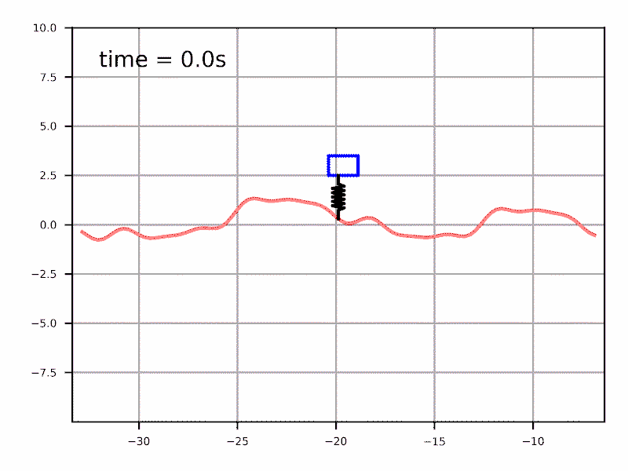

Préface
La science du mouvement
Ce cours présente les outils mathématiques pour analyser le mouvement et synthétiser des algorithmes pour le contrôler, des méthodes classiques basées sur un modèle jusqu'à l'apprentissage par renforcement.
Le cours présente des modèles cinématiques et dynamiques couramment utilisés pour développer des lois de commande et planifier des trajectoires pour les principaux types de systèmes robotiques.
Aperçu visuel



Introduction
Le but du cours est de présenter les outils mathématiques pour modéliser, analyser et contrôler le mouvement des systèmes robotiques. Des manipulateurs industriels aux véhicules autonomes, nous explorons comment la physique du mouvement dicte les algorithmes de décision.
Cibles de formation
À la fin de ce cours vous serez en mesure de:
- Modéliser et analyser le mouvement des robots en utilisant les outils mathématiques adaptés.
- Choisir un type de modèle et une méthode de commande adapté à un problème de contrôle du mouvement.
- Mettre en œuvre des algorithmes de commande et de planification de trajectoires pour divers types de systèmes robotiques.
Déroulement du cours et Évaluation
Déroulement
Périodes de formation (3h/sem) : Leçons magistrales et démonstrations en classe.
Travaux pratiques (2h/sem) : Exercices dirigés théoriques ou informatiques et consultation pour les projets.
Étude personnelle : Lectures et vidéos suggérées chaque semaine.
Évaluation
Devoirs : 8 devoirs hebdomadaires (analytiques et numériques). Seul les 5 meilleurs comptent.
Examen : Évaluation théorique de 3h à la semaine 9 (feuille de note permise).
Projet : Projet individuel de modélisation/commande avec présentation finale.
Guide du cours
Cette section présente les liens vers le matériel et les livrables semaines par semaines:
| Semaine | Sujet & Matériel | Exercices | Livrables |
|---|---|---|---|
19 Jan |
IntroductionEspace des phase d'un système, types de modèles, défis de commande. |
- | Devoir #1 |
216 Jan |
Bras articulés: cinématique |
- | Devoir #2 |
323 Jan |
Bras articulés: dynamique |
- | Devoir #3 |
530 Jan |
Bras articulés: commande 1 |
- | Devoir #4 |
66 Fév |
Bras articulés: commande 2 |
- | Devoir #5 |
6 bis13 Fév |
Véhicules: modélisation |
- | Devoir #6 |
720 Fév |
Véhicules: planification |
- | Devoir #7 |
827 Fév |
À venir! |
- | Devoir #8 |
913 Mars |
Examen Théorique |
- | Examen |
10-13 |
État de l'art & Projets |
- | Projet de session |